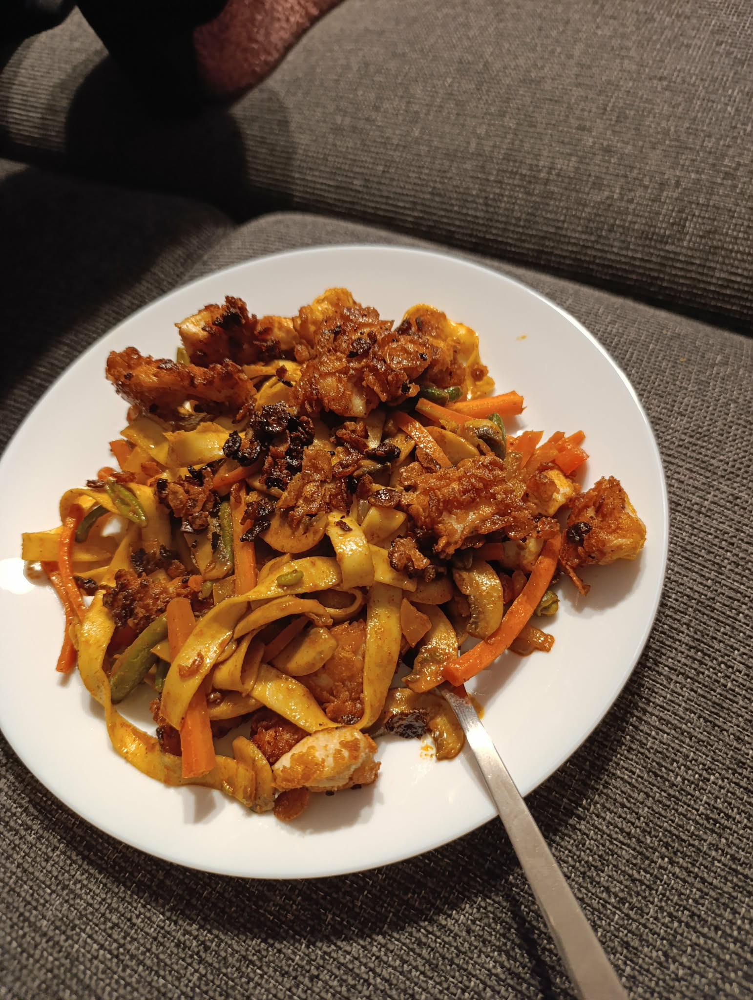
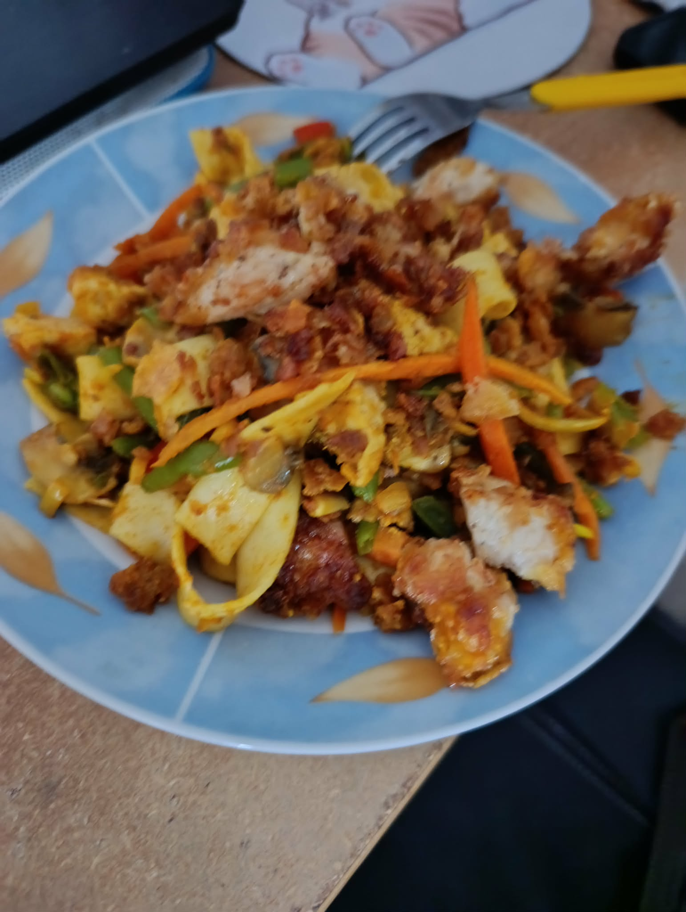

Potrzebujemy
Pierś z kurczaka
Płatki kukurydziane w ilości - chuj wie
2 jajka
1 marchewka
10 pieczarek(można więcej)
1 cebule
1 papryke czerwoną
1 opakowanie mrożonej fasolki szparagowej
Makaron typu Tagiatelle
Przyprawy: sól, pieprz, czosnek granulowany, papryka słodka, papryka ostra, czerwone curry, gałka muszkatołowa
- Challenge rozpoczynamy od kurczaka, należy go pokroić w troche większą kostke
- Przyprawiamy kurczaka solą i pieprzem
- W miedzyczasie wstawiamy i solimy wodę na fasolke, a po zagotowaniu wrzucamy
- Następnie kruszymy płatki kukurydziane na oddzielny talerzyk oraz w jeszcze inny rozbijamy i roztrzepujemy jajca
- Na rozgrzaną patelnie wrzucamy kurczaka obtoczonego kolejno w jajku i potem płatkach
- U nas trzeba to robić seriami ze względu na małą patelnie
- Po wszystkim odkładamy kurczaka na bok
- Warzywa najlepiej zacząć od pieczarek
- Kroimy je wzdłuż w plasterki bez nóżek i podsmażamy z solą
- Cebule następnie kroimy w kostke i dorzucamy do pieczarek
- Po tym jak pieczarki odparują znaczną część wody zrzucamy wszystko do miseczki
- Papryke kroimy w kostke, a marchewke w tzw. julienne(cienkie paseczki)
- Tu modlimy się by fasolka juz sie ugotowała i gotujemy już wodę na makaron
- Wszystkie warzywa wrzucamy do jednej miseczki i dodajemy przyprawy
- Należy je dobrze wymieszać
- W momencie wrzucenia makaronu do gorącej wody, możemy zacząć smażyć warzywa
- Po ugotowaniu dorzucamy makaron oraz kurczaka z wcześniej
- Mieszamy jeszcze chwilę, aby kurczak mógł się zagrzać jeśli czekał, a makaron wymieszał z resztą składników
- Można podawać nasze danie, smacznego!